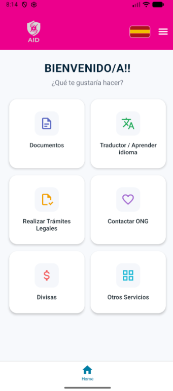

Objetivos del Proyecto
Objetivo General
Facilitar la integración y la autonomía de las personas mediante una herramienta digital que simplifica la interacción con documentos, idiomas y entornos administrativos complejos.
Ventajas Competitivas
A diferencia de otras soluciones, AID centra todas las necesidades en un mismo lugar y brinda la información de forma eficiente.
Servicios Integrales
Escaneo y OCR
Captura documentos físicos y conviértelos en texto editable y almacenable. Ideal para gestionar archivos personales de forma segura.
Traductor Contextual
Traducción entre más de 100 idiomas con un motor optimizado para contextos legales y administrativos, facilitando el aprendizaje del idioma local.
Trámites Legales
Asistencia paso a paso para la realización de trámites administrativos y legales esenciales, reduciendo la barrera burocrática.
Contacto con ONGs
Ponte en contacto directo con Organizaciones No Gubernamentales de apoyo. Una red de ayuda a solo un toque de distancia.
Gestión de Divisas
Conversor de moneda con tasas de cambio actualizadas en tiempo real, fundamental para gestionar economías internacionales.
Experiencia Premium
Una interfaz intuitiva, moderna y viva, diseñada para ofrecer la máxima comodidad y eficiencia al usuario.
Arquitectura del Sistema
AID está construido sobre un stack tecnológico robusto y moderno, garantizando escalabilidad y seguridad:
- Frontend: React Native con Expo para una experiencia nativa fluida.
- Lenguaje: TypeScript para un código robusto y libre de errores.
- IA: Integración con APIs de Google Cloud para traducción y análisis documental.
- Backend: Arquitectura basada en microservicios con soporte para bases de datos relacionales empresariales.